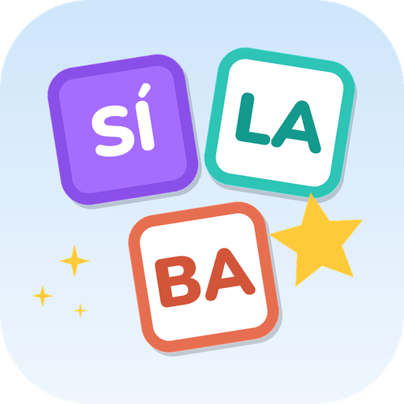

Sí-la-baPolítica de privacidade
Última atualização: 12 de outubro de 2026
Esta política vale para o aplicativo Sí-la-ba (pacote com.zero5.silabas), publicado na Google Play por zero5. O Sí-la-ba é um jogo educativo para crianças, usado com o acompanhamento de um adulto (pais, responsáveis, fonoaudiólogos ou professores).
Resumo: o Sí-la-ba não coleta, não envia e não compartilha dados pessoais. Não tem anúncios, não tem rastreamento e não pede cadastro ou login. Tudo o que é criado no app fica guardado somente no aparelho.
1. Informações guardadas no aparelho
Para funcionar, o app guarda localmente, no armazenamento interno do próprio aparelho:
- Perfis das crianças criados pelo adulto: apelido (recomendamos não usar o nome completo), figura de avatar, cor e as configurações de jogo.
- Histórico de jogo: palavras jogadas, acertos, erros, tempo e estrelas, usados para os relatórios e para o álbum de figurinhas.
- PIN da área do adulto, guardado de forma cifrada (resumo criptográfico), nunca em texto puro.
- Gravações de voz feitas pelo adulto (opcional), usadas como som das sílabas ou palavras.
- Situação da compra do Sí-la-ba Completo e o uso das rodadas diárias da versão gratuita.
Essas informações não saem do aparelho. Nós (zero5) não temos acesso a elas.
2. Permissões do aparelho
- Microfone: usado somente quando o adulto escolhe gravar um som na área do adulto. A gravação fica no aparelho e só é usada dentro do app. Se a permissão não for concedida, o app funciona normalmente, sem a gravação.
- Internet: usada somente pela Google Play para a compra do Sí-la-ba Completo e para confirmar ou restaurar essa compra. O jogo funciona sem internet.
3. Compras
O Sí-la-ba Completo é uma compra única feita pelo sistema de cobrança da Google Play. O pagamento é processado inteiramente pelo Google; não recebemos dados de cartão nem outros dados de pagamento. O app recebe da Play apenas a confirmação de que a compra existe, para liberar os recursos. A compra fica disponível dentro da área do adulto, protegida por PIN, e nunca é oferecida para a criança. Veja também a Política de Privacidade do Google.
4. Exportação de relatórios e sons
O adulto pode exportar relatórios (arquivo CSV) e sons gravados (arquivo .zip). Essa exportação só acontece quando o adulto toca no botão e escolhe, pelo compartilhamento do Android, para onde enviar o arquivo (por exemplo, e-mail ou WhatsApp). A partir daí, o arquivo fica sob responsabilidade de quem o compartilhou.
5. Crianças
O app foi feito para crianças e segue o programa Famílias da Google Play. Não coletamos dados pessoais de crianças, não exibimos publicidade e não há links para fora do app na área da criança. Os perfis são criados e gerenciados por um adulto, na área do adulto protegida por PIN. Este tratamento está de acordo com a Lei Geral de Proteção de Dados (LGPD, Lei 13.709/2018), incluindo o art. 14 sobre dados de crianças e adolescentes.
6. Como apagar os dados
- Na área do adulto: Crianças → Editar → Excluir apaga uma criança e todo o histórico dela.
- Em Segurança e dados: “Apagar só o histórico” ou “Apagar todos os dados”.
- Desinstalar o app (ou limpar os dados dele nas configurações do Android) apaga tudo.
Como não guardamos dados em servidores, não há nada a apagar do nosso lado.
7. Terceiros
O app não usa serviços de análise, anúncios ou redes sociais. O único serviço externo é a cobrança da Google Play, descrito no item 3.
8. Mudanças nesta política
Se esta política mudar, a nova versão será publicada nesta página, com a data de atualização. Mudanças importantes também serão informadas nas notas de versão do app.
9. Contato
Dúvidas sobre privacidade: solucoeszero5@gmail.com